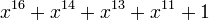

This help file describes LFSR ciphers in general. A description how to use them in JCT can be found in the tutorial to the GUI: LFSR: How to use this visualization.
A linear feedback shift register (LFSR) is a sequential shift register with combinatorial logic which causes it to pseudo-randomly cycle through a sequence of binary values. The input bit of the shift register is a linear function of its previous state. The most commonly used linear function of single bits is exclusive-or (XOR).
For most of the general explanations, the authors used the wording from Wikipedia [1].
The initial value of the LFSR is called the seed, and because the operation of the register is deterministic, the sequence of values produced by the register is completely determined by its current (or previous) state. Likewise, because the register has a finite number of possible states, it must eventually enter a repeating cycle.
However, an LFSR with a well-chosen feedback function can produce a sequence of bits which appears random and which has a very long cycle. A design modeled after LFSRs often has both speed and area advantages over a functionally equivalent design that does not use LFSRs.
LFSRs can be implemented in more than one way, but the scope of this document will focus on the most common one – the Fibonacci implementation.
The Fibonacci implementation consists of a simple shift register of length m. The bit positions that affect the next state are called the taps. In the diagram below, the tap sequence is [16,14,13,11]. The taps are XOR'd sequentially with the output and then fed back into the leftmost bit.
A maximal or maximum-length LFSR produces an m-sequence (i.e. cycles through all possible 2^m - 1 states within the shift register except the state where all bits are zero), unless it contains all zeros, in which case it will never change.
The sequence of numbers generated by an LFSR can be considered a binary numeral system, while the tap sequence of an LFSR can be represented as a polynomial mod 2 (finite field arithmetic). This means that the coefficients of the polynomial must be 1's or 0's. This is called the feedback polynomial. For example, if the taps are at the 16th, 14th, 13th, and 11th bit (as shown), the feedback polynomial is:
The 'one' in the polynomial does not correspond to a tap – it corresponds to the input to the first bit (i.e. x^0, which is equivalent to 1). The powers of the terms represent the tapped bits, counting from the left. The first and last bits are always connected as an input and tap respectively.

The choice of which taps to use determines how many values are included in a sequence of pseudo-random values before the sequence is repeated. Certain tap settings yield the maximal length sequences of 2^(m-1).
The length of an LFSR sequence before repetition occurs depends on two things: upon the feedback taps and upon the initial state. An LFSR of any given size m (number of registers) is capable of producing every possible state during the period length N = 2^(m-1), but will do so only if proper feedback taps have been chosen (this is then independent of the initial state). Such a sequence is called a maximal length sequence (m-sequence). In cryptography, m-sequences are referred to as pseudo-random sequences.
When the feedback taps of an LFSR are non-maximal, the length of the generated sequence depends also upon the initial state of the LFSR. A non-maximal generator is capable of producing two or more unique sequences (plus the trivial all-zeros one), with the initial state determining which one is produced. Each of these sequences is referred to as a state space of the generator. Together, all possible non-maximal sequences account for all 2^m states of an m-bit state register.
Properties of non-maximal sequences are generally inferior to those of maximal sequences. So the use of non-maximal sequences in real systems is usually avoided in favor of their maximal-length counterparts.
LFSRs have long been used as pseudo-random number generators for use in stream ciphers (especially in military cryptography) – due to the ease of construction from simple electromechanical or electronic circuits, long periods, and very uniformly distributed outputs. However, an LFSR is a linear system, leading to fairly easy cryptanalysis. For example, given a stretch of known plaintext and corresponding ciphertext, a stretch of LFSR output used in the system described above can be recovered, and from the output sequence one can construct an LFSR of minimal size by using the Berlekamp-Massey algorithm, which with the known output can be used to simulate the intended receiver to recover the remaining plaintext.
Important LFSR-based stream ciphers include A5/1 and A5/2 (used in GSM cell phones), E0 (used in Bluetooth), and the shrinking generator. The A5/2 cipher has been broken and both, A5/1 and E0, have serious weaknesses.
a) 4-bit Fibonacci LFSR from Anne Canteaut [6], section 3.1, page 44:
c = tap = 0011 seed = 1011 Expected output starts with: 1011 1100 0100 1101 = 0xBC4D Expected output (after first stage): 1100 0100 1101
b) 16-bit Fibonacci LFSR from Wikipedia [1], see Figure 1 above:
c = tap = 0000 0000 0010 1101
seed = 1010 1100 1110 0001 = 0xACE1 (= 1st stage in the LFSR register)
Next stage in the LFSR register (after one clock):
0101 0110 0111 0000 = 0x5670
Illustration (how the new stage is created by adding 1 bit at the beginning of the register):
101 0110 0111 0000 1 = 0xACE1
0 101 0110 0111 0000 = 0x5670
Expected output starts with: xxxxxxxxxx = 0xyyyy
The tap numbers correspond to a primitive polynomial, so the register cycles through the maximum number of all possible 65535 states (excluding the all-zeroes state). The state 0xACE1 (hexadecimal) will be followed by 0x5670.